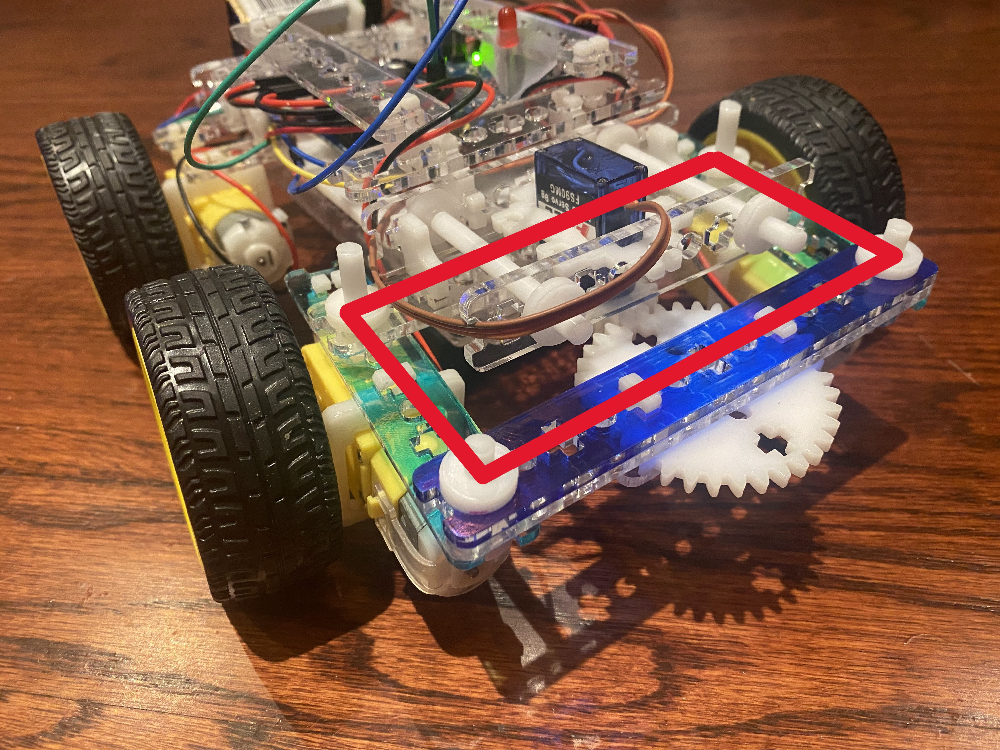

Remote Controlled Ackermann Arduino Car
Completed Fall 2021MEC 101: Freshman Design Innovation - Bluetooth-controlled car with custom Ackermann steering mechanism

Overview
A Bluetooth-controlled car that steers properly. Most hobby RC builds turn by running the left and right wheels at different speeds, which is imprecise and skids under load. This one uses a custom four-bar linkage to give the front wheels real Ackermann geometry, so the inner wheel turns sharper than the outer and both roll without scrubbing.
Build
Four-bar steering
The linkage was designed around the Ackermann condition — steering arms angled so their extensions meet at the rear axle — then laser cut and fitted to a servo.
Electronics
An Arduino Uno reads an HC-05 Bluetooth module, drives the rear DC motors through an L298N, and positions the steering servo.
Control
The ArduinoBlue phone app sends throttle and steering values; firmware maps them to motor direction, PWM speed and servo angle.
Gallery
